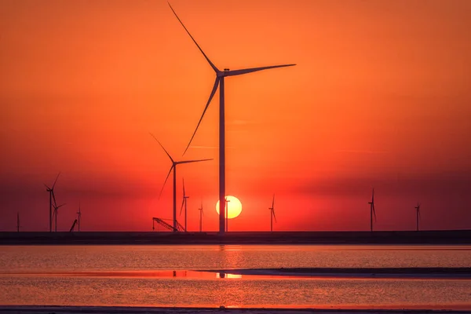

Energia Eólica: A Força dos Ventos
Benefícios da Energia Eólica
A energia eólica é uma das formas mais limpas e sustentáveis de geração de energia elétrica. Confira seus principais benefícios:
- Fonte Renovável: Utiliza o vento, um recurso natural abundante e renovável.
- Baixo Impacto Ambiental: Não emite gases poluentes ou resíduos tóxicos.
- Custo Reduzido: Após a instalação, os custos de operação são muito baixos.
- Criando Empregos: Promove o desenvolvimento econômico e a geração de empregos nas regiões onde é implantada.
Como Funciona a Energia Eólica?
A energia eólica é gerada pelo movimento das turbinas eólicas impulsionadas pelo vento. Entenda o processo:
- Captação do Vento: As pás das turbinas captam o movimento do vento e o transformam em energia mecânica.
- Conversão de Energia: Um gerador converte a energia mecânica em energia elétrica.
- Distribuição: A energia gerada é integrada à rede elétrica para abastecer casas, empresas e indústrias.
Por que Investir em Energia Eólica?
Investir em energia eólica é apostar em uma solução sustentável e eficiente. Veja os motivos para adotar essa tecnologia:
- Independência Energética: Reduz a dependência de combustíveis fósseis e fontes não renováveis.
- Contribuição Ambiental: Ajuda a reduzir o impacto do aquecimento global e as emissões de gases de efeito estufa.
- Baixo Custo Operacional: Depois de instalada, a manutenção e operação têm custos reduzidos.
- Apoio Governamental: Muitos países oferecem incentivos fiscais e financiamentos para projetos de energia eólica.
Sustentabilidade e Energia Eólica
A energia eólica é essencial para o futuro do nosso planeta. É uma alternativa limpa que substitui fontes poluentes, como carvão e petróleo, ajudando a preservar o meio ambiente e combater as mudanças climáticas.
Além disso, as turbinas eólicas ocupam pouco espaço no solo, permitindo que áreas ao redor sejam utilizadas para agricultura ou preservação ambiental.
Entre em Contato
Quer saber mais sobre energia eólica ou como implementar essa solução na sua casa ou empresa? Fale conosco!